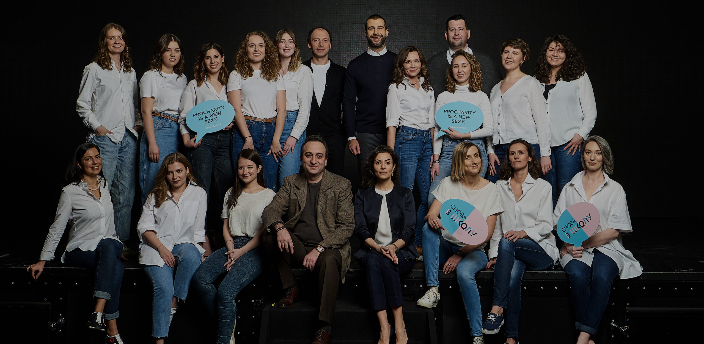
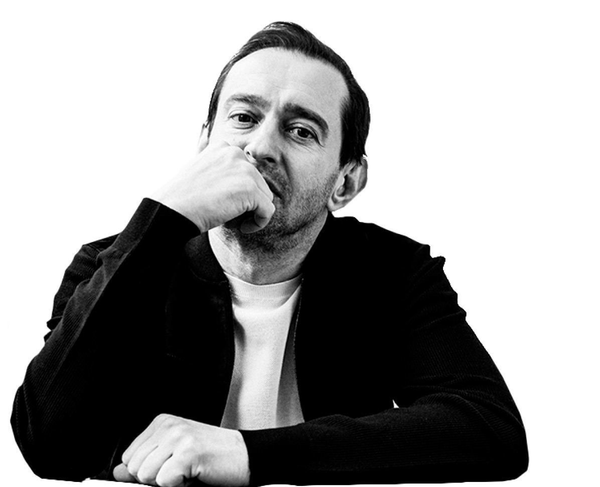
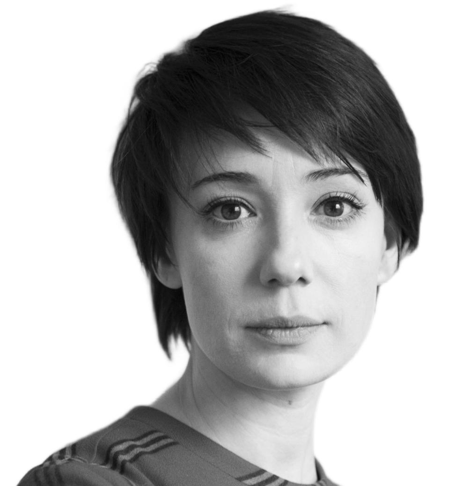
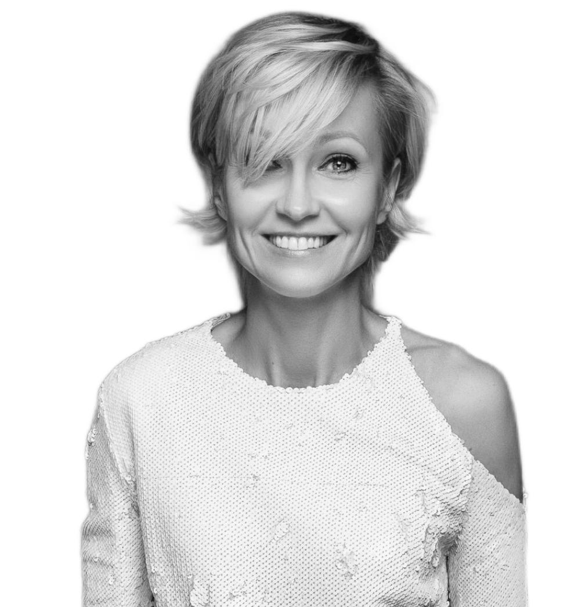
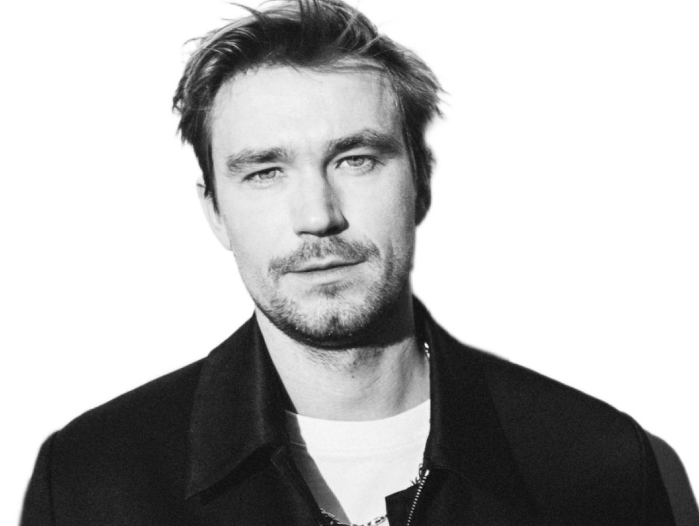
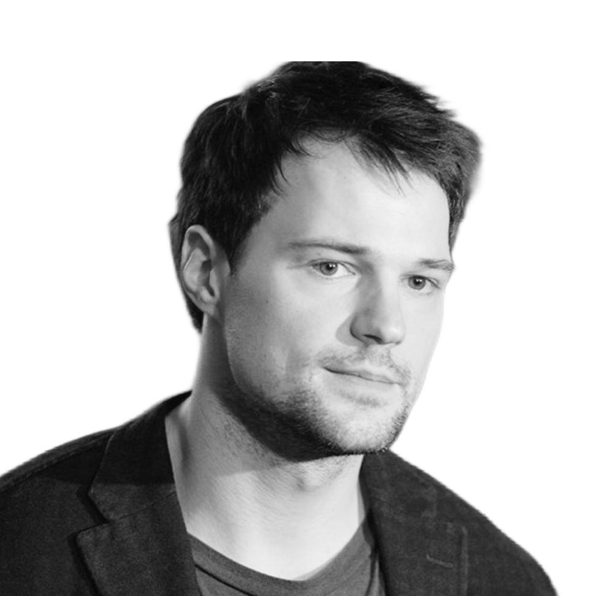
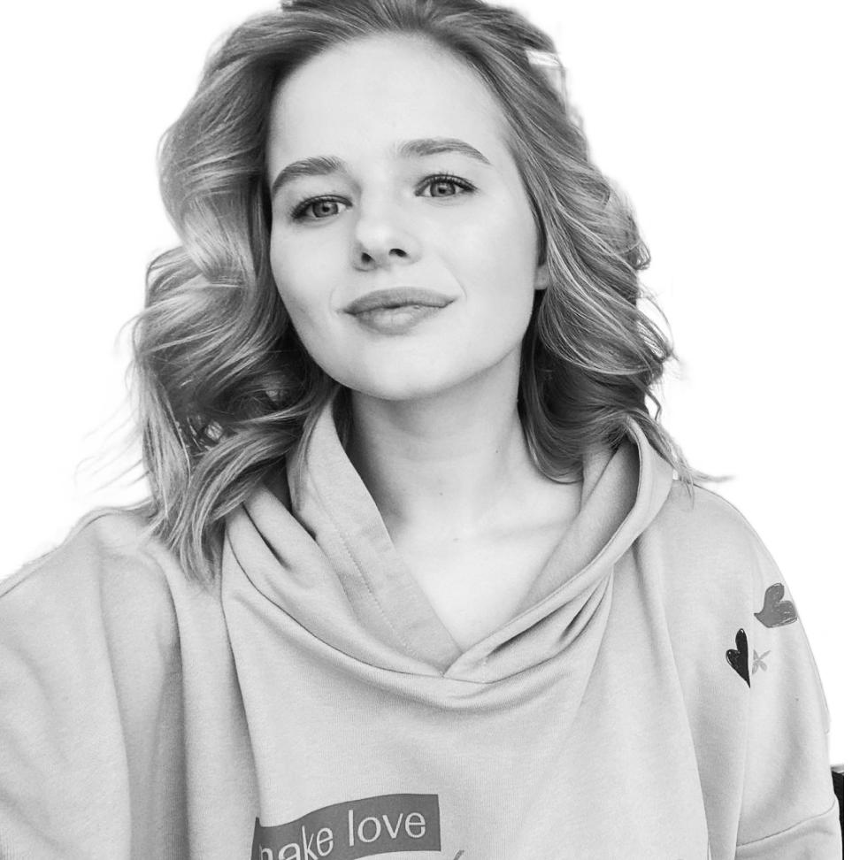

 Мы помогаем фондам,чтобы они помогали другим Фонд «Друзья» — это фонд для тех, кто хочет приносить пользу другим людям ничего за это не беря. Наши программы
Создаем настоящую школу, институт благотворительности Московская школа профессиональной филантропии — это фактически акселератор НКО‑проектов, который создает сообщество профессионалов.
Профессионализми опыт в дар Платформа интеллектуального волонтерства ProCharity — cкорая интеллектуальная помощь для благотворительных фондов.
 Благотворительность — это состояние души Константин Хабенский, актер, режиссер, основатель Фонда Константина Хабенского
 Мы пытаемся изменить «ландшафт», чтобы проблемы в сфере детской онкологии решались системно Чулпан Хаматова, актриса, учредитель фонда «Подари жизнь»
 Смысл нашей работы в том, чтобы человеку в конце жизни было не больно, не стыдно и не одиноко — а значит, не страшно Ингеборга Дапкунайте, актриса, сопредседатель попечительского совета Фонда помощи хосписам «Вера»
 Я фанат своего дела, но главным предназначением считаю помощь людям Александр Петров, актер, попечитель фонда «Дом с маяком»
 Даже самые небольшие пожертвования делают очень большое дело и оказывают действительно огромную помощь Данила Козловский, актер, попечитель фонда «Дети-бабочки»
Меняя отношение к пожилым сейчас, мы создаем будущее, где будет комфортно всем Лиза Арзамасова, актриса, член попечительского советафонда «Старость в радость»
 Трудные подростки — это не трудные дети,это дети, которым трудно Саша Бортич, Актриса, попечительница фонда «Шалаш»
Причин оказаться без крыши над головой — сотни. Если кто-то думает, что он застрахован от этого, то ошибается Юрий Шевчук, музыкант, друг благотворительной организации «Ночлежка»